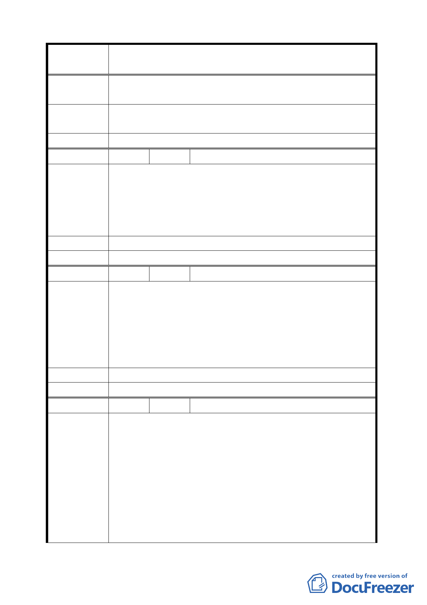

案
名
變更臺北市士林區至善段五小段 80、81、117 地號等加油站
用地為公園用地細部計畫案
公里，無須再設置加油站。
污染環境。
建 議 辦 法 希望有個好公園，美化環境提升生活品質，請更改為公園用
地。
委 員 會 決 議 同編號 6。
編 號 16 陳情人 黃斯聖
1.設立加油站，只圖利部分人士，而為當地居民帶來的便利，
恐怕不如油價下降 1.2 元有利。
陳 情 理 由 2.加油站有爆炸的隱憂，一旦爆炸，威力之大，誰來負責。
3.三差路口原本車禍已多，何苦為了開車人的一點方便或建
商的利益，而危及甚至犧牲人民的生命。
建 議 辦 法 改為公園、綠地。
委 員 會 決 議 同編號 6。
編 號 17 陳情人 蕭國雄
1.加油站的設立，將不可避免帶來空氣、土壤及水質等多方
面的污染。
陳 情 理 由 2.當全球提倡節能減碳的同時，增設非必要之加油站，無異
變相鼓勵民眾開車。
3.鄰近已有多個加油站，開車者並不會計較多開一點路到比
較便宜的加油站加油。
建議辦法
委 員 會 決 議 同編號 6。
編 號 18 陳情人 宋后玲
1.該加油站違反都市計劃與交通安全。
至善路五小段80、81、117地號等加油站用地之位置， 正
面臨故宮車道下坡出口十字路，與自強隧道龐大車流轉彎
出口處，以及至善路一、二、三段快慢直行幹道相交會點，
陳 情 理 由 如設置加油站極不妥，違反都市計畫之原則。請考察該處
平日交通已混亂易堵塞每日需仰賴多位交警指揮，才能避
免塞車與車禍，如再設加油站乃雪上加霜不智之舉，不僅
違反交通安全，浪費交通指揮，難免造成交通大癱瘓，民
怨四起，意外事故頻傳，抗爭不斷。請重視問題之嚴重。
41